Wolf's Tutorial #11 - Triggers
Introduction:
This is an intermediate to advanced tutorial. If you are new to UnrealED then please see my tutorial page for links to Basic Tutorials to get you started.
Triggers
We are going to discuss (and learn to use) various kinds of triggers in this tutorial. We will not cover all triggers. This tutorial is designed to get you familiar with how triggers work and their various properties. You will learn how they work and a few different type of triggers you can deploy for various effects. You can use what you learn here to figure out other kinds of triggers.
Basic Trigger
For a trigger to work you need a couple basic things. An Event and a Trigger. There are two properties that are ESSENTIAL for triggers. They are found under Events (any any actor Properties window). They are Event and Tag.
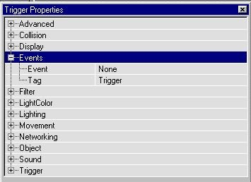
You can think of the Tag as the name of the actor. This Tag is the "name" the trigger calls to send the actor into action.
The Event is the where you put the Tag you want the trigger to call.
Simple Example
Switchable Light
Let's start by making a small room (256 sq). Add a PlayerStart in one corner. In another corner add an object that might be a switch. Add a trigger (Expand Triggers and choose the Trigger with the big minus sign next to it --see image below) in the corner in front of your switch looking texture.
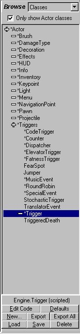
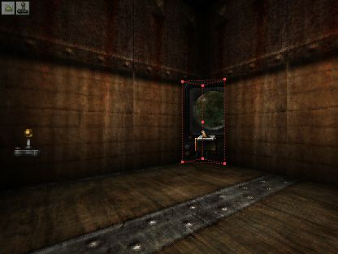
Now in the Browser go to Classes. Expand Light and choose TriggerLight (the first one). Now add the TriggerLight in the center of the room, near the top.
Now we have all the actors, we just need to set it up.
First, set the Tag (under Events) of the light to something unique, like LIGHT1. Now open the trigger properties and under Events set it's Event to LIGHT1 (or whatever tag you gave the light).
Now wee need to do a couple more things to the light. First open the TriggerLight properties window. Under TriggerLight make sure bInitiallyOn is set TRUE.
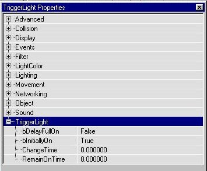
Now under Object/InitialState set it to Trigger Toggle. This will turn the light on or off as the trigger is activated.
Okay, that should do it. Now Rebuild and then run the map. When you walk to the corner where the trigger is the light should go off. Take a couple steps back and then forward again and it should come back on. Basically, whenever you activate the trigger it will toggle the light to on or off.
Breakdown:
The EVENT in the trigger properties tells the trigger WHAT to activate. The TAG of the light names it so the trigger can activate it. Always make sure the Tag of the actor you want activated and the Event of the trigger you want to activate it are the same.
The light property set to initial on (bInitiallyon=True) can be set to off and then the trigger would turn it on). The Object/InitialState of the light is set to toggle so that it will switch back and forth between on and off each time you activate it.
Explore:
Try setting the InitialState of the light to other settings besides TriggerToggle.
Try TriggerControl: This should make the light go out whenever you are in proximity of the trigger.
TriggerTurnsOn and TriggerTurnsOff are pretty self explanatory.
TriggerPound doesn't work on a TriggerLight actor.
Trigger Properties
So, all the settings that control the light we set with the light actor. Doesn't the Trigger itself have any properties we can set? Glad you asked.
Yes.
There are a few things with the trigger you can set as well.
Open the trigger Properties then Expand Trigger.
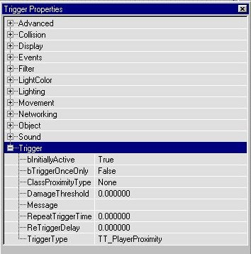
TriggerTypes
Look at the TriggerType
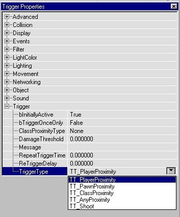
This defines what activates the trigger. TT_ means TriggerType to the engine.
The default is TT_PlayerProximity. This simply means whenever the Player is within the Proximity of the trigger--see Proximity below).
TT_PawnProximity means only pawns (any pawns) can activate the trigger.
TT_Classroximity means only a special class (defined in ClassProximityType) can activate the trigger.
TT_AnyProximity means any of the TT_ types can activate the trigger.
TT_Shoot means you have to shoot the trigger to activate it.
Proximity
This is how big the the "area" of the trigger is. You set this under Collision/CollisionHeight and CollisionRadius. These should be pretty self explanatory.
InitialState
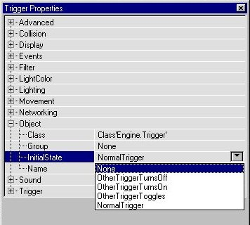
Under Object/InitialState you can set the "state" of the trigger. Your choices are None, Normal, OtherTriggerTurnsOn (or Off), OtherTriggerToggles.
Normal is just that. The trigger works when activated.
None will deactivate the trigger altogether.
OtherTrigger settings should be pretty evident what they do.
Trigger Settings
Under Trigger (where we found the trigger types) you will see a few more settings that you can adjust.
bInitiallyActive A True/False toggle. Setting it to False means something must activate the trigger (another trigger for example) for it to work.
bTriggerOnceOnly A True/False toggle. If set True it will only work ONE time.
ClassProximityType Used to define the ClassProximityType under TriggerType
DamageThreshold How much damage you must inflict on the trigger when it's type is set to TT_Shoot.
Message The message to display when trigger is activated.
RepeatTriggerTime Time between the trigger repeats
ReTriggerDelay Time delay before trigger can be re-activated.
TriggerType (see TriggerTypes above).
Other Triggers Classes
If you expanded the Triggers tree in the browser (which you had to to find Triggers ) then you saw lots of other kinds of triggers. I will not explain them all but here are some popular kinds you may want to try out. An (!) means It is defined in more detail below:
CodeTrigger (see ElevatorTrigger)
Counter Must be triggered a certain number of times before sending the trigger info to it's event
Dispatcher (!) Is triggered itself then activates a user set sequence of events with optional delays
ElevatorTrigger Hmmm...I wonder what this does? I'm saving this for a future tutorial!
FatnessTrigger When activated sets the fatness of an actor from one state to another.
FearSpot Creatures will tend to back away from this area.
Jumper Creatures will jump in a specified direction when activating this trigger
MusicEvent (!) Where you specify and change background music
RoundRobin Everytime you trigger this it advances through a set of outgoing events
SpecialEvent (!) Receives a trigger message and sends out various "Special Events" depending on it's setting
StochasticTrigger Kind of like a dispatcher but you set certain special events to occur
TranslatorEvent (!) Where you set the "pop up" Translator Messages
-Trigger Basic Trigger
ZoneTrigger Activates/deactivates zone properties (only bGravityZone works).
TriggeredDeath Kills that which activates it.
Dispatcher
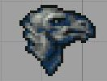
Dispatchers are used to trigger multiple events. You can delay the out put to create a "scripted sequence" of events.
You can use it to do all sorts of things from one trigger with various delays. You could have it open a door, turn off (or on) a light and play a sound then wait a second and shut the door, toggle the light and play a different sound. You can do lots of cool "scripted events" with these handy triggers!
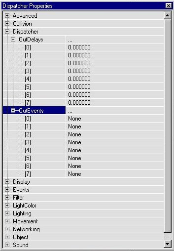
OutEvents set the sequence of events you want triggered and in what order.
OutDelays set the delay between the events.
MusicEvent
Here is where you set and change the cool Unreal background music.
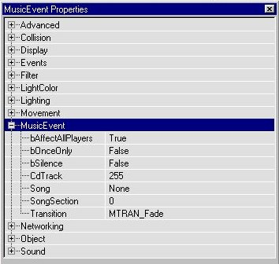
Song and SongSection are the two settings you will use the most
Song picks the song you want to play (under Music in the Browser you can load the songs you want)
SongSection is a setting of 0, 1, or 2 to set the mood of the song (normal, tense, action I think)
SpecialEvent
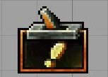
The settings under Object/InitialState determine what type of special event is triggered:
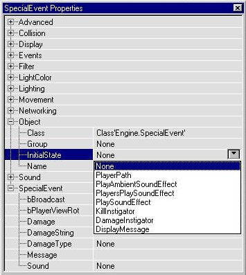
For the most part they are self explanatory (PlaySoundEffect, DisplayMessage, etc...)
The particular settings for each type are set under SpecialEvent.
TranslatorEvent
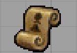
This is where you trigger the messages that appear on the Translator.
The specific settings and the Message itself are entered under TranslatorEvent.
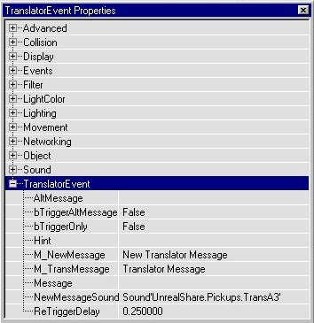
Other Ways to Trigger Events
Actor Triggered Events
There are other ways to trigger events besides actual triggers. The easiest and most common would be to set an Event to an actor such as a mover. If you specify another actor's Tag in the Event of the mover, when it is finished going through it's key frames it will activate the actor. For instance, let's say you have a door that is activated by a lever. Make a mover that looks like a lever. Make a door. Give the door a tag like "Door1" and set it's initial state to TriggerOpentimed. Now set the event of the Lever to "Door1" and when the lever moves it will activate the door.
BumpButtons
Bumpbuttons are cool ways to set one mover to activate another and not have all those red lines connecting them in your maps.
Make a mover that looks like a button (or whatever you like). Make another mover that this will trigger (like a door or something). Now give the door a unique tag.
Now under the button's InitialState set it to BumpButton.
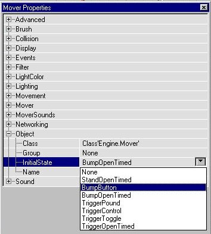
Now under Mover set the Bump Event to the tag of the "door" you want it to activate.
You can also set the BumpType (to player, pawn or any).
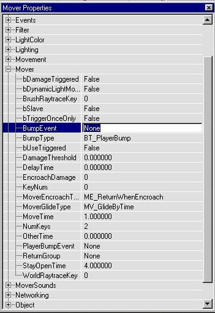
Now if the button is touched it will activate the other mover. You can also set the BumpEvent to a SpecialEvent's tag and activate a special sound or message or whatever. You can do lots of cool things with this one, too.
Tips
Anytime you want a single trigger to trigger multiple events use a dispatcher.
Anytime you want a "button" or "switch" (a mover) to activate something set it to a BumpButton.
Always double check your Tags and Events if something isn't working right. This is usually not set right when something fails.
You can check just what properties a trigger is affected by simply by opening the trigger's script (double-clicking it in the browser) and reading the comments (green stuff).
The way the trigger affects the event (toggle, control, etc,...) is set in the actor's Object/InitialState.
The way a trigger is activated is set under the Triggers TriggerType.
Pull The Trigger
Now you should have enough info to start triggering things all over your level. You should be able to trigger whatever you like now and set it off the way you want. Explore and play around with different types of triggers and their settings.
©Copyright 1999 Tony Garcia (a.k.a. Wolf). No part of this tutorial may be reproduced without my permission.